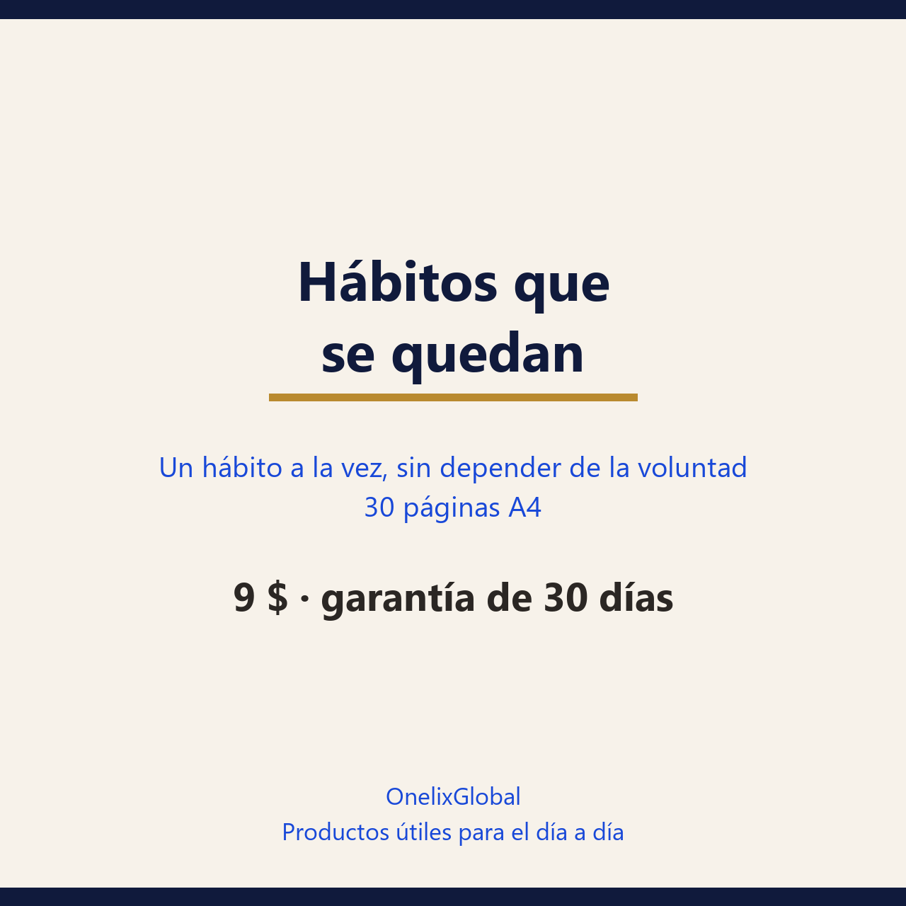

Veintiún días para que el hábito aguante el mes tres, sin depender de la fuerza de voluntad y sin el mito de los 21 días. Una sola conducta, no siete.
30 días de garantía: si no te sirve, escribes y se resuelve.
Pago seguro en Gumroad · PDF para leer en el móvil, la tablet o impreso.

30 páginasPDF · españolLa versión mínima cabe en dos minutos y no depende de nadie: una sentadilla, una página, un vaso de agua. Si tu mínimo necesita cambiarte de ropa o convencer a alguien, es demasiado grande.
La fórmula es una frase: «Después de [algo que ya haces], hago [la versión mínima]». No hace falta motivación nueva, sino una señal que ocurra todos los días en el mismo sitio.
La regla es nunca cero: se hace la mínima y se sigue. Fallar un día no rompe el proceso; dos semanas de fallos, sí. La guía trae plan de reinicio y qué hacer cuando cambia el contexto (mudanza, viaje, trabajo nuevo).
Aquí no se repite el «21 días»: la mediana del estudio más citado es de 66 días, con un rango de 18 a 254, y esa cifra viene de un libro de 1960 sin ningún ensayo detrás. La guía explica el dato con sus límites en lugar de venderte una fecha redonda.
Preferimos decirlo claro antes de que pagues.
has empezado varias veces y siempre abandonas en la semana dos o tres; si quieres un hábito concreto —moverse, leer, dormir mejor, ordenar, ahorrar— y no un plan de vida; si prefieres una tarjeta y una X a otra app con gráficas; si quieres entender por qué el diseño falla en lugar de echarte la culpa.
buscas un tratamiento: si el hábito que quieres cambiar es una adicción (tabaco, alcohol, juego), la guía sirve como apoyo y no como sustituto de un tratamiento con evidencia. Tampoco es un libro de motivación: no vas a encontrar frases inspiradoras, sino un diseño que aguanta el mes tres.
Es una mediana, no una regla: en el estudio de Lally, 39 personas con buen ajuste tardaron entre 18 y 254 días. La guía propone planificar a tres meses y medir señales intermedias en lugar de esperar un número mágico.
Puedes, pero rinde menos. Si los dos son pequeños y van anclados a momentos distintos del día, es viable; si compiten por el mismo hueco, elige uno y pon el otro en la lista de espera, que viene como plantilla.
Volver al día siguiente en la versión mínima, sin recuperar lo perdido. Un fallo aislado no destruye el proceso; tres días seguidos sí empiezan a romperlo.
No. Una tarjeta y un bolígrafo funcionan igual y no se caen con una actualización. El problema de las apps aparece cuando el registro se convierte en el proyecto y el hábito se queda sin tiempo.